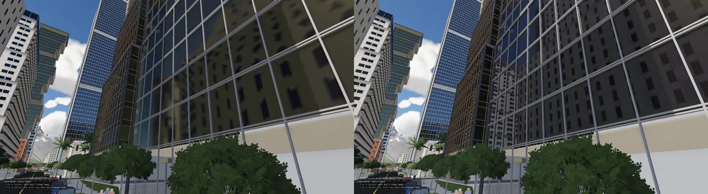
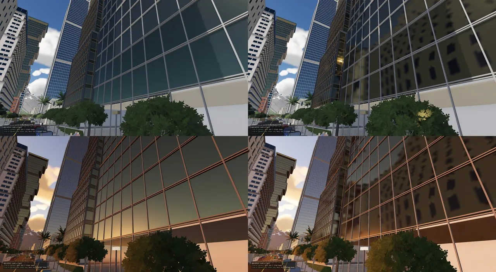
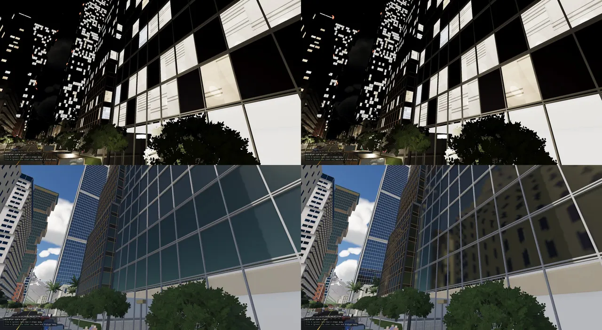
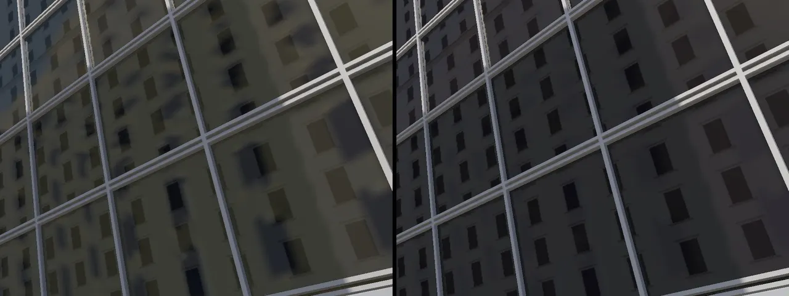
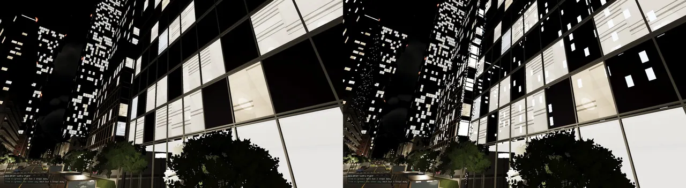
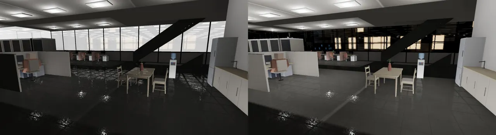
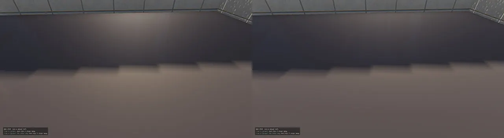

A shiny surface shows what is around it, so the renderer has to answer one question for every glossy pixel: what does it see in the mirror direction? Near the camera, and for smooth surfaces only, a real ray answers it, traced on the GPU against the buildings, streets and cars close by. Farther off, a reflection probe answers it: a small cube picture of the street, captured once as "what the surfaces are" and relit every few frames, so the time of day costs nothing. Past the probes the sky cube answers. The three tiers fade into one another, and each one falls back to the next.

Before November the renderer had two ways to fill a reflection. Screen-space reflections (SSR, on the frame page) march the mirror ray through the depth buffer and copy whatever colour is there. They are cheap and sharp, but they can only show what is already on the screen: the building behind you, or the floors of a tower above the top edge of the view, are not there to copy. Everything else fell back to the sky. Under the physical sky that became the sky cube (ADR-0371, on the sky page): the sky drawn into a 128² cubemap each frame and blurred into mips by roughness. A glass tower then reflected a clean blue sky even when it stood across a narrow street from another building. ADR-0371 says it plainly: "Today's reflections are still the sky's alone."
Real reflections need the world, not just the sky, and they need it from points of view the camera does not have. There are two classic answers and the engine uses both:
So the plan (Glenn: "close up ray traced, farther faked") is a ladder. Rays where they matter and fit, probes behind them, the sky behind those.
Which tier answers a pixel. The scene pass always computes the probe-or-sky reflection; where the rays will answer it takes that share back out, and the ray pass adds the same share in, sharper (the "no ghost" rule below).
The tiers are not switched hard. Each fades into the next over a margin: the probe fades to the sky over the last
4 m inside its box, and the rays fade to the probe over the last 25 m of their 150 m reach (fade) and
as roughness rises to 0.3. Every rule lives in one place, the lights.lua data table, next to the
lights (the lighting page covers the rest of that file):
-- THE REFLECTION PROBES (ADR-0374): one every `spacing` m of street, `height` m over the carriageway, its box (the -- reflection's parallax) `side` m past the kerbs either side to the frontages, from `below` under the street to -- `above` over it; sites nearer than `merge` are one (junctions); the 64 nearest are held, and one leaves only once it -- is `hysteresis` m past the nearest set's edge -- indoors (ADR-0380), the storey you stand on: one every `indoor_spacing` m across it, `indoor_height` m up probes = { spacing = 40, height = 5, side = 30, below = 1, above = 45, merge = 20, hysteresis = 15, indoor_spacing = 8, indoor_height = 1.6 }, -- RAY-TRACED REFLECTIONS (ADR-0376; Glenn: "close up raytraced, further away faked"): rays only from surfaces -- smoother than `max_roughness`, within `near` m, faded into the probes over the last `fade` m; they hit only these -- draw classes (structure, scenery, furniture, groundPaint, simBody: a level's drawDistances names) within `near`; the structures may take at most -- `memory_share` of the GPU memory free when they start (and never more than 1.5 GB) raytrace = { near = 150, fade = 25, max_roughness = 0.3, memory_share = 0.25, hits = { "structure", "furniture", "simBody" } },
The comment on raytrace names five classes a ray may hit, but the list holds three
(structure, furniture, simBody). The list is what the code reads.
A probe here is not a picture of light. It is a picture of stuff. When a probe is captured, each of its six cube faces records, per texel, what the nearest surface is: its colour, how metallic and rough it is, which way it faces, how much it glows and how far away it is. That is a small G-buffer (a "geometry buffer": the surface properties a lighting pass needs, stored instead of the lit colour). A compute shader then relights those texels the way the scene pass lights a real surface, with this frame's sun, sky and lamps. Dusk falls and the probes darken with it, without a recapture. That split, capture rarely and relight often, is the idea the four stages were built around (ADR-0372: "a probe keeps what its faces saw, not their light, so time of day costs no recapture").
One probe's life. The CPU decides where probes stand and which faces to capture; the GPU captures, stores, relights and blurs them inside the frame, before the scene pass that reads them.
A probe face is a 90° square camera at the probe. ADR-0372 made the frame's globals (set 0 binding 0: the view,
lights, sky) a dynamic uniform with slots: slot 0 is the frame's view, slots 1 and 2 are the probe faces
captured this frame, each with its own view-projection and eye. So a frame captures at most two faces
(kGlobalsSlots = 3). Renderer::beginProbeFace(probe, face, eye) and
endProbeFace() bracket the draws for a face, and the backend's queueDraw routes them into that
slot's queue instead of the frame's. They are recorded after the shadow cascades (the capture shader samples the
shadow array through set 0) into three 64² RGBA16F targets and a depth, through capture twins of the mesh
pipelines.
The fragment shader is mesh.frag itself, compiled a second time with PROBE_CAPTURE
defined (mesh_probe.frag.spv). It runs all the material logic (the procedural surfaces, the vertex tints,
the bakes), so a captured brick wall has the same albedo as the one on screen, and then writes the surface instead of
the light:
#ifdef PROBE_CAPTURE
outColor = vec4(albedo, metallic);
// (an indoor surface's distance is written negative: the relight lights it as a room, not the open sky; ADR-0380)
outEmit = vec4(emission * (skyIsPhysical() ? g.skyPhysical3.z : 1.0),
length(inWorldPos - g.cameraPosition.xyz) * ((pc.surfaceFlags.y & (1u << 28)) != 0u ? -1.0 : 1.0));
#endif
}
#ifdef PROBE_CAPTURE
outNormal = vec4(N * 0.5 + 0.5, roughness); // a probe's G-buffer (RGBA16F) keeps its own layout: probe_relight.comp
#else
outNormal = gbufEncode(N, roughness, specWeight); // world normal (SSAO), roughness (SSR, rays), reflection weight
#endif
The clear values do the "nothing here" bookkeeping: an albedo alpha of 0, and a distance of 10 000, which the
relight reads as "the sky shows here" (anything over 9 000). Transparent surfaces are captured as opaque. Each
finished face is blitted, mirrored left to right, into layer probe × 6 + face of three 2D arrays (64
probes, 384 layers). The mirror is there because cube maps are left-handed: probeFaceBasis gives each
face's forward and up in the convention the shaders sample by.
| Image | Size | What a texel holds |
|---|---|---|
| G-buffer array 0 | 64² × 384 layers, RGBA16F | albedo (rgb), metallic (a) |
| G-buffer array 1 | 64² × 384 layers, RGBA16F | world normal × 0.5 + 0.5 (rgb), roughness (a) |
| G-buffer array 2 | 64² × 384 layers, RGBA16F | emission in engine units (rgb); distance from the probe (a), negative for an indoor surface, 10⁴ for none |
| Radiance cube array | 64² × 384 layers × 5 mips, RGBA16F | the relit colour; mip m is the GGX blur for roughness m / 4 |
Only the static world goes into a face: RenderSystem walks structures, scenery, furniture and ground paint within
the board's reach (300 m), culled against that face's own frustum. Cars (SimBody), effects
and grass stay out. The ground comes from the frame's own terrain draws, which TerrainLodSystem selected for the camera,
"so a probe near the camera sees most of the same ground, not all of it" (ADR-0372).
Proving the capture before using it. Stage A shipped with no reflections at all.
RT_PROBE_TEST=1 put probe 0 at the camera, and RT_PROBE_DUMP=<file.ppm> wrote its six faces
(albedo, normal and emission rows) to a strip. At a street corner at noon the dump showed the paving and kerbs, palms,
shop fronts and awnings, the road's markings and the towers down the street, with the right normals. The first dump
fired after 12 faces, at the spawn point before the camera had moved, which is why the dump now rewrites itself every
600 faces and follows the camera. RT_PROBE_TEST retired with stage B; RT_PROBE_DUMP is
still there.
Reflections are seen from the street, so the probes stand along the streets. placeProbeSites walks
every edge of the level's road network (LevelRoadGraph, the one graph every consumer reads) and drops a
site every 40 m of centreline, 5 m over the carriageway: "a little over a bus's height". On a deck or a ramp the
height follows the line between the edge's ends, not the ground under it. Each site's box is the stretch of
street it stands for, reaching 30 m past both kerbs to the building frontages, from 1 m below the road to 45 m above
it. Sites closer than 20 m (and within 6 m in height) merge, so a junction gets one probe, not one per arm. ADR-0374
measured river_town: 1017 sites in 1 ms.
struct ProbeSite {
Vec3 position;
Vec3 boxMin, boxMax;
bool indoor = false; // a storey's (ADR-0380): only indoor surfaces read it, and they read only these
};
// The rules (lights.lua `probes`; these are the defaults a missing field takes).
struct ProbeRules {
double spacing = 40.0; // m of centreline per probe
double height = 5.0; // m above the carriageway
double side = 30.0; // m the box reaches past the road's half width, either side
double below = 1.0; // m the box reaches under the carriageway (its floor is the street: what the probe saw) ...
double above = 45.0; // ... and over it
double merge = 20.0; // a site this near another (and within 6 m in height) is the same site: junctions
double hysteresis = 15.0; // m past the nearest set's edge a resident probe may drift before it gives its slot up
// INDOORS (ADR-0380): the storey the camera stands on, one probe every `indoorSpacing` m across its footprint at
// `indoorHeight` over its floor, each box its cell from floor to ceiling
double indoorSpacing = 8.0, indoorHeight = 1.6;
};
Sites along a street and a side street (a schematic: the spacing is to scale, the box's reach across the street is drawn shorter than its 30 m, and its height, 1 m under the road to 45 m over it, is not shown). The highlighted box is what one probe's reflection is box-projected against.
A city has far more sites than the renderer's 64 slots. pickResidentProbes keeps the nearest 64 by plan
distance, re-picked once the camera has moved 4 m in plan (the > 16.0 below is that distance squared). A resident probe keeps its slot until it
is hysteresis (15 m) past the edge of the nearest set, so walking down a street recaptures only the probes
you pass, not a reshuffled 64. The new arrivals are queued six faces each, nearest first, and two faces are taken a
frame:
const Vec3 eye = ctx.view.camera.position;
// who holds the slots: again once the camera has moved a few metres
const double mx = eye.x - lastEye_.x, mz = eye.z - lastEye_.z;
if (mx * mx + mz * mz > 16.0 || board.slots.size() != resident_.size()) {
lastEye_ = eye;
const std::vector<int> before = resident_;
if (pickResidentProbes(sites_, eye, lightBook().probes.hysteresis, resident_) || board.slots.size() != resident_.size()) {
board.slots.assign(resident_.size(), ReflectionProbe());
// the new arrivals, nearest first, six faces each
std::vector<std::pair<double, int>> joined;
for (std::size_t i = 0; i < resident_.size(); ++i) {
const int s = resident_[i];
if (s < 0) {
// empty: a box inside out holds nothing
board.slots[i] = ReflectionProbe(Vec3(0, -1e6, 0), 0.0f, Vec3(1, 1, 1), Vec3(-1, -1, -1));
continue;
}
const ProbeSite& site = sites_[static_cast<std::size_t>(s)];
board.slots[i] = ReflectionProbe(site.position, 0.0f, site.boxMin, site.boxMax);
board.slots[i].indoor = site.indoor;
if (s != before[i]) joined.emplace_back((site.position - eye).lengthSquared(), static_cast<int>(i));
}
std::sort(joined.begin(), joined.end());
for (const std::pair<double, int>& j : joined)
for (int f = 0; f < 6; ++f) pending_.push_back(Pending{j.second, resident_[static_cast<std::size_t>(j.second)], f});
++board.revision;
}
}
// this frame's faces (a slot given away since it was queued is skipped)
while (!pending_.empty() && static_cast<int>(board.captures.size()) < kFacesPerFrame) {
const Pending p = pending_.front();
pending_.pop_front();
if (resident_[static_cast<std::size_t>(p.slot)] != p.site) continue;
board.captures.push_back(ProbeBoard::Face{static_cast<uint32_t>(p.slot), p.face});
}
}
An empty slot is a box turned inside out, which holds nothing, so no pixel reads it. A slot whose site changed
since its faces were queued drops the stale faces. On the renderer side, setReflectionProbes clears a
slot's "faces captured" and "relit" bits whenever its probe moved, so a moved probe is unlit, and skipped by every
pixel, until its six new faces are in.
Why the captures are not baked. ADR-0372 planned to bake the captures with the
level in stage B. ADR-0375 measured first: RT_DUMP_STATS logs a probe face's CPU cost, 0.35 ms, and
only while a probe is being captured (about 2 s at load). Baking would cost "~0.5 GB of disk on river_town and
several GB on the island to save those 2 seconds", and relighting already makes the time of day free. So probes
are captured as you arrive, and nothing is stored.
To relight a probe the way mesh.frag lights a pixel, the two had to share their lighting code. ADR-0373
moved it: the globals block and set-0 textures to globals.glsl, the GGX terms, light falloff,
shadows and one light's contribution (shadeLight) to lighting_common.glsl, the sky
harmonics to sky_physical.glsl. mesh.frag, sky.frag and the relight include
them. The proof that the move changed nothing was the same shot, with only cloud edges, wind-moved foliage and a
passing car differing. Then probe_relight.comp lights every texel of a probe's six faces:
int layer = int(pc.eye.w) * 6 + id.z;
vec4 alb = texelFetch(gAlbedo, ivec3(id.xy, layer), 0);
vec4 nr = texelFetch(gNormal, ivec3(id.xy, layer), 0);
vec4 em = texelFetch(gEmit, ivec3(id.xy, layer), 0);
vec3 dir = cubeDir(id.z, (vec2(id.xy) + 0.5) / vec2(size));
vec3 col;
if (em.a > 9000.0) {
col = skyIsPhysical() ? textureLod(skyCubeTex, dir, 0.0).rgb : mix(g.skyHorizon.rgb, g.skyZenith.rgb, clamp(dir.y, 0.0, 1.0));
} else {
// (a negative distance: an indoor surface, ADR-0380 -- lit as mesh.frag lights a room: no open sky)
const bool indoorTexel = em.a < 0.0;
vec3 P = pc.eye.xyz + dir * abs(em.a);
vec3 N = normalize(nr.rgb * 2.0 - 1.0);
vec3 V = -dir;
vec3 albedo = alb.rgb;
float metallic = clamp(alb.a, 0.0, 1.0);
float roughness = clamp(nr.a, 0.04, 1.0);
vec3 f0 = mix(vec3(0.04), albedo, metallic);
float a = max(roughness * roughness, 0.002);
float a2 = a * a;
float NdotV = max(dot(N, V), 1e-4);
// the sun's shadow where the frame's cascades reach (measured from the frame's camera), the mountains' beyond
float viewDepth = -(g.view * vec4(P, 1.0)).z;
float sv = g.counts.y > 0 ? computeShadow(P, N, viewDepth) : 1.0;
if (g.counts.x > 0) {
sv *= terrainShadow(P, normalize(g.lights[0].directionInner.xyz));
sv *= cloudShadow(P, normalize(g.lights[0].directionInner.xyz)); // (ADR-0387)
}
vec3 direct = vec3(0.0);
for (int i = 0; i < min(g.counts.x, 32); ++i)
direct += shadeLight(g.lights[i], P, N, V, albedo, metallic, f0, a2, NdotV, vec3(sv));
vec3 F = fresnelSchlickRoughness(NdotV, f0, roughness);
vec3 kd = (1.0 - F) * (1.0 - metallic);
vec3 irr = skyIsPhysical() ? skyIrradianceSH(N) : g.skyHorizon.rgb * 0.5;
vec3 spec = skyIsPhysical() ? textureLod(skyCubeTex, reflect(-V, N), roughness * 5.0).rgb : vec3(0.0);
if (indoorTexel && skyIsPhysical()) {
irr = vec3(dot(skyIrradianceSH(vec3(0.0, 1.0, 0.0)), vec3(0.2126, 0.7152, 0.0722)) * 0.30);
spec = irr;
}
col = direct + kd * albedo * irr * g.ambient.rgb + spec * F + em.rgb;
}
imageStore(radiance, ivec3(id.xy, layer), vec4(max(col, vec3(0.0)), 1.0));
}
Three details matter. The position comes back from the stored distance (eye + dir × distance), so
shadows and lamp falloff are evaluated at the real surface. The sun's shadow uses the frame's own cascades, measured
from the frame's camera, and the mountains' horizon map beyond them (the cloud shadow, ADR-0387, is on the
clouds page). And the lights are diffuse only:
SHADE_DIFFUSE_ONLY drops each light's specular highlight from the relight. A highlight belongs to where
the eye stands, and the probe's eye is not the viewer's. Baked in, ADR-0374 found, the sun's glint off a far window
was smeared by the prefilter "into a flat yellow patch on every rough leaf that read the probe"; widening the
roughness made the patch bigger. The sky's reflection and the glows stay in.
Relighting is spread over frames. Each frame takes up to four probes whose six faces are all in, round-robin from a
cursor, and then probe_prefilter.comp blurs those four into mips 1–4: 48 GGX importance samples per texel,
at roughness m / 4 for mip m, read from mip 0.
if (probes.empty() || !probeGbufGeneral || !ensureRelightPipelines()) return;
const uint32_t n = static_cast<uint32_t>(std::min<std::size_t>(probes.size(), kMaxProbes));
std::vector<uint32_t> pick;
for (uint32_t k = 0; k < n && pick.size() < 4; ++k) {
const uint32_t i = (relightCursor + k) % n;
if (probeFaces[i] == 0x3F) pick.push_back(i);
}
relightCursor = (relightCursor + 4) % std::max(n, 1u);
With all 64 slots captured, that is every probe relit once every 16 frames.
mesh.frag's physical-sky branch first takes the sky cube's reflection, then asks
probeReflection for the probe whose box holds the pixel, passing the sky's answer as the fallback:
vec3 probeReflection(vec3 P, vec3 R, float roughness, vec3 fallback, bool indoor) {
// the plan grid's cell (ADR-0374) names two street probes and an indoor one (ADR-0380): a street surface tries the
// street's, an indoor one only the storey's -- the first relit one whose box holds P
int k = int(probeGridSize.x);
if (probeCount.x < 0.5 || k <= 0) return fallback;
ivec2 gc = ivec2(floor((P.xz - probeCount.yz) / probeCount.w));
if (any(lessThan(gc, ivec2(0))) || any(greaterThanEqual(gc, ivec2(k)))) return fallback;
uint pair = probeCells[gc.y * k + gc.x];
int best = -1;
for (int j = indoor ? 2 : 0; j < (indoor ? 3 : 2) && best < 0; ++j) {
int i = int((pair >> (8 * j)) & 0xFFu) - 1;
if (i < 0) break;
if (probeData[i * 3].w < 0.5) continue;
vec3 lo = probeData[i * 3 + 1].xyz, hi = probeData[i * 3 + 2].xyz;
if (all(greaterThanEqual(P, lo)) && all(lessThanEqual(P, hi))) best = i;
}
if (best < 0) return fallback;
vec4 pos = probeData[best * 3];
vec3 lo = probeData[best * 3 + 1].xyz, hi = probeData[best * 3 + 2].xyz;
vec3 r = normalize(R);
vec3 t1 = (hi - P) / r, t2 = (lo - P) / r;
vec3 tf = max(t1, t2);
float t = min(min(tf.x, tf.y), tf.z);
vec3 d = P + r * t - pos.xyz;
vec3 c = textureLod(probeRadiance, vec4(d, float(best)), roughness * 4.0).rgb;
vec3 edge = min(P - lo, hi - P);
float w = clamp(min(min(edge.x, edge.z), edge.y + 100.0) / 4.0, 0.0, 1.0); // (4 m from a wall; not the floor)
return mix(fallback, c, w);
}
The box projection is the four lines from t1 to d. From the pixel P, the
reflected ray is followed to the point where it leaves the box (the nearest of the three far-wall hits), and the cube
is read in the direction from the probe to that exit point, not along R. A reflection of the
building across the street then lines up with the building, wherever on the glass you look. The blend weight is the
distance to the nearest side wall over 4 m; the floor and ceiling are left out (edge.y + 100), so a pixel
at street level is not faded just for being near the box's floor.
Which box holds a pixel is the expensive question. Stage D's first version tested every box, and ADR-0374 measured it: 7.6 ms on river_town's scene pass (6.8 → 14.4 ms). The fix is a plan grid: 64 × 64 cells over the probes' boxes, each cell naming the two street probes nearest its middle whose boxes reach it, built on the CPU only when the probes change. A pixel reads its cell and tests at most two boxes. The scene pass with the grid: 7.3 ms, 0.5 ms over no probes.
struct ProbeGrid {
static constexpr int kSize = 64;
float originX = 0, originZ = 0; // the grid's min corner
float cell = 1; // m a side
// per cell: (nearest street probe + 1) | (second street probe + 1) << 8 | (nearest indoor probe + 1) << 16; 0 none
std::vector<uint32_t> cells = std::vector<uint32_t>(kSize * kSize, 0u);
};
// `probes`' boxes into the grid (an inside-out box, an empty slot, is left out)
void buildProbeGrid(const std::vector<ReflectionProbe>& probes, ProbeGrid& out);

RT_PROBE_TEST=1 putting a probe at a street
corner). Left: the sky cube alone, flat blue-grey. Right: the probe, the building across the street in the panes,
at noon (top) and golden hour (bottom), with no recapture between them.
Indoors, the street's probes are wrong: they show the street through the walls. ADR-0377 first kept them out with
RenderMaterial::FLAG_INDOOR (bit 28), set at load on drywall, interior floor finishes and furniture. An
indoor surface read neither the street's probes nor the open sky, only a dim neutral share of the day's light (30%
after ADR-0378). That stopped the glow of the street on office walls but left floors with nothing to reflect.
Glenn's point was that storing cubemaps for every interior would be "crazy expensive", and "probes just need to
exist for that floor when you're on it". ADR-0380 does exactly that. When the camera stands in a building,
ProbeSystem finds its storey with the interior system's own storeyPlans and storeyOf, and lays
a grid over the footprint's oriented box: one probe every 8 m, 1.6 m over the floor, each box its cell from floor to
ceiling. These sites follow the street's in the same list, so the street probes keep their slots, and changing floor
or building clears only the indoor ones. Nothing is stored; a floor is captured as you arrive, two faces a frame.
ReflectionProbe::indoor. The plan grid's third byte names the nearest
indoor probe; an indoor surface reads only that, a street surface only the first two.Glenn asked about real ray tracing for the buildings near you, "and not blow up my gpu". The renderer asked Vulkan
for version 1.0, which has no ray tracing. Before changing that, ADR-0375 built a measuring tool,
rt_measure. RT_RT_MEASURE=<frame> collects every instance drawn within 300 m of the
camera over RT_RT_WINDOW frames (600; you turn the camera round meanwhile), then asks the driver what
acceleration structures would cost (vkGetAccelerationStructureBuildSizesKHR, from counts alone, nothing
allocated). The question goes to a short-lived Vulkan 1.2 device on the same GPU, so the renderer's own device is
not touched.
| ADR-0375 (uncompacted; terrain and GPU crowd not counted) | river_town | island_8_nature, financial district |
|---|---|---|
| bottom levels for every mesh on the GPU | 1.26 GB | 3.4 GB |
| bottom levels within 150 m | 35 MB | 147 MB |
| top level (300 m) | 2 MB | 6.5 MB |
| device memory free | 5.2 GB | 1.2 GB |
Everything cannot fit on the island; what is near you can, at about a tenth of what is free. That set the shape of
everything after: rays only from smooth surfaces near you, hitting only near buildings, street and cars (not
foliage, small props or the crowd), under a hard cap that drops the farthest meshes first. The same commit moved the
renderer to Vulkan 1.2: the instance asks for 1.2 when the loader has it, capped by the device's own version (the
3080 reports 1.4.341), and VMA, the memory allocator, is told. RT_VK_1_0=1 keeps 1.0. It was
validation-clean on river_town with the same frames as 1.0.
ADR-0376 step 3a turned on what rays need, all or nothing: the extensions
VK_KHR_acceleration_structure, VK_KHR_ray_query,
VK_KHR_deferred_host_operations and VK_KHR_spirv_1_4, and the features
bufferDeviceAddress, accelerationStructure and rayQuery through a
VkPhysicalDeviceFeatures2 chain. The renderer uses ray queries, not a ray-tracing pipeline: a
compute shader asks "what does this ray hit?" inline, with no shader binding table. Mesh vertex and index buffers became
addressable (they are build inputs for the structures, and the hit shader reads them by address). The frame's cost
did not move (11.10 vs 11.21 ms). RT_RT_REFLECT=0 leaves all of it off.
RenderSystem picks the near scene on the CPU. It takes the instances of the raytrace.hits draw
classes within near, all the way round the camera (a reflection sees behind you), at the tier the
draw itself would pick from here, so a building's far model stays out. Transparent parts stay out too: "a ray goes
into the car, as an eye would". The static world is re-picked once the camera has moved 5 m, or every 60 frames;
what moves (simBody: the city's cars, ADR-0381) is picked every frame at this frame's pose. Both lists
merge nearest first:
auto takes = [&](DrawClass c, const RenderMaterial& m) {
return hits[static_cast<int>(c)] && m.opacity >= 0.999f &&
!(m.flags & (RenderMaterial::FLAG_SHADOW_ONLY | RenderMaterial::FLAG_OVERLAY | RenderMaterial::FLAG_GRASS));
};
// ...
if (staticDue) {
rayEye_ = cam.position;
rayFrame_ = frameNo_;
pick(false, rayNear_);
}
const bool movers = hits[static_cast<int>(DrawClass::SimBody)];
if (movers) pick(true, rayMoving_);
if (staticDue || movers) {
rayAll_ = rayNear_;
if (movers) rayAll_.insert(rayAll_.end(), rayMoving_.begin(), rayMoving_.end());
std::sort(rayAll_.begin(), rayAll_.end(), [](const std::pair<Real, Renderer::RayInstance>& x,
const std::pair<Real, Renderer::RayInstance>& y) { return x.first < y.first; });
rayList_.clear();
for (const std::pair<Real, Renderer::RayInstance>& p : rayAll_) rayList_.push_back(p.second);
const float rayRules[3] = {static_cast<float>(rules.near), static_cast<float>(rules.fade), static_cast<float>(rules.maxRoughness)};
ctx.renderer.setRayInstances(rayList_, static_cast<float>(rules.memoryShare), rayRules);
}
setRayInstances turns each into two things: an RtScene::Instance (the mesh's buffers and
counts, its 3 × 4 transform, and a custom index) for the acceleration structures, and a row the hit shader reads by
that index (albedo, roughness, emission, metallic, the vertex and index buffers' device addresses, the vertex stride
and the material flags).
What a ray can hit, and who holds it. A bottom level (BLAS) is per mesh, so a car model or a repeated building part is built once however many instances there are; the top level (TLAS) places the instances.
RtScene keeps one bottom-level acceleration structure (BLAS: a GPU tree over one mesh's
triangles) per mesh, keyed by its handle, and builds a top level (TLAS: a tree over the placed instances,
each pointing at its mesh's BLAS) every frame. The budget is fixed at the first call: a share of the device memory free
at that moment, never over 1.5 GB.
// a share of what is free, and never more than 1.5 GB whatever the card
const VkDeviceSize budget = std::min<VkDeviceSize>(static_cast<VkDeviceSize>(static_cast<double>(freeBytes) *
std::clamp(memoryShare, 0.0f, 0.5f)), VkDeviceSize(1536) << 20);
Each frame record walks the near list nearest first. A mesh that already has a BLAS is marked used and
ready. A missing one is sized by the driver, and is built only if the memory held, plus this structure, plus any scratch
it adds, stays inside the budget. Builds are also capped at 600 000 triangles a frame (one mesh always goes), so
arriving in a dense block spreads its builds over several frames rather than stalling one:
VkAccelerationStructureBuildSizesInfoKHR si{};
si.sType = VK_STRUCTURE_TYPE_ACCELERATION_STRUCTURE_BUILD_SIZES_INFO_KHR;
p.info.pGeometries = &p.geo;
sizes_(device_, VK_ACCELERATION_STRUCTURE_BUILD_TYPE_DEVICE_KHR, &p.info, &tris, &si);
// (and its start's alignment slack: the frame's builds share one scratch, each start aligned)
const VkDeviceSize scratch = alignUp(si.buildScratchSize, scratchAlign_) + scratchAlign_;
const VkDeviceSize growScratch = std::max<VkDeviceSize>(scratchNeed + scratch, scratchSize_) - scratchSize_;
// THE BUDGET: what is held, plus this one, plus any scratch it adds -- never past it
if (total() + si.accelerationStructureSize + growScratch > budget_) { ++stats_.skipped; continue; }
// ...
// the scratch, grown to the frame's builds (kept: the next frames reuse it)
auto growScratch = [&](VkDeviceSize need) {
if (need <= scratchSize_) return true;
if (scratch_) retiredTlas_.push_back(Retired{Blas{VK_NULL_HANDLE, scratch_, scratchAlloc_, 0, 0, 0}, counter});
scratch_ = VK_NULL_HANDLE;
scratchSize_ = 0;
if (!buffer(need, VK_BUFFER_USAGE_STORAGE_BUFFER_BIT, false, scratch_, scratchAlloc_, nullptr)) return false;
scratchSize_ = need;
return true;
};
// (scratchNeed has each build's alignment slack: one grow is enough for the lot -- a second, whose failure would
// leave this frame's structures unbuilt yet counted ready, cannot be needed)
if (!pending.empty() && !growScratch(scratchNeed)) {
// ...
if (!pending.empty()) {
VkDeviceAddress base = addressOf(scratch_);
VkDeviceSize off = 0;
std::vector<VkAccelerationStructureBuildGeometryInfoKHR> infos;
std::vector<const VkAccelerationStructureBuildRangeInfoKHR*> ranges;
for (Pending& p : pending) {
p.info.pGeometries = &p.geo;
p.info.scratchData.deviceAddress = alignUp(base + off, scratchAlign_);
off += p.scratchBytes;
infos.push_back(p.info);
ranges.push_back(&p.range);
}
build_(cmd, static_cast<uint32_t>(infos.size()), infos.data(), ranges.data());
The scratch is the temporary memory a build works in. All of a frame's builds share one buffer, each starting at
an aligned offset. The + scratchAlign_ on line 170 is the slack for that alignment, counted per build
before anything is allocated, so a single grow always fits the lot. That line changed in the last commit before the
merge (12695b94, the review fixes). Before it, the slack was found only after the grow: the code
could need a second grow, and if that one failed, this frame's structures stayed unbuilt yet counted ready.
Then the top level, over every instance whose BLAS is ready. Each instance carries its row index in
instanceCustomIndex, and back-face culling is off, so a ray sees the inside of a wall as well as the
outside:
// 2. THE TOP LEVEL over every ready instance
std::vector<VkAccelerationStructureInstanceKHR> inst;
inst.reserve(nearestFirst.size());
for (std::size_t i = 0; i < nearestFirst.size(); ++i) {
if (!ready[i]) { ++stats_.skipped; continue; }
const Instance& in = nearestFirst[i];
auto it = blas_.find(in.key);
if (it == blas_.end()) continue;
VkAccelerationStructureInstanceKHR v{};
std::memcpy(&v.transform, in.transform, sizeof(v.transform));
v.instanceCustomIndex = in.custom & 0xFFFFFFu;
v.mask = 0xFF;
v.flags = VK_GEOMETRY_INSTANCE_TRIANGLE_FACING_CULL_DISABLE_BIT_KHR;
v.accelerationStructureReference = it->second.address;
inst.push_back(v);
}
The TLAS buffer grows with 50% headroom, and a structure retired (a grown TLAS, an idle BLAS, an old scratch) goes to a list and is destroyed only when no frame in flight can still read it. On river_town ADR-0376 measured about 600 instances, 115–155 MB of bottom levels and 12 MB of scratch, of a 1.37 GB budget, for +0.14 ms of GPU and +0.09 ms of recording. That is three to four times ADR-0375's 35 MB, because the measurement counted only what was drawn, and buildings hidden from the camera are never drawn, though a reflection sees them.
The budgets drawn to one scale (the full bar is 1.37 GB). On river_town the near scene uses about an eighth of its budget; on the island the budget is small enough that the nearest-first order decides what is left out.
Fixed since this page's commit: the budget holds the top level too. The budget counted
only the bottom levels, so the top level and its instance buffer could take the memory past it. Since 2026-11-09
(58d12b54, ADR-0391) room is kept for the top level's growth and its instances (and its scratch),
a top level that fails to build frees its buffer instead of leaking it, and a skipped mesh is counted once.
rt_reflect.comp runs after the screen-space pass, at its half resolution. Every pixel smoother than 0.3
and within 150 m traces its mirror ray against the near scene, out to twice near:
float depth = textureLod(depthTex, uv, 0.0).r;
if (depth <= 0.0) return; // the sky
vec4 nr = textureLod(normalTex, uv, 0.0);
float roughness = gbufRoughness(nr);
if (roughness > pc.rules.z) return; // rough: the screen-space and probe reflections stand
vec3 P = reconstructWorld(uv, depth);
float camDist = distance(P, g.cameraPosition.xyz);
if (camDist > pc.rules.x) return; // far: faked
vec3 N = gbufNormal(nr);
vec3 V = normalize(P - g.cameraPosition.xyz);
vec3 R = reflect(V, N);
rayQueryEXT q;
rayQueryInitializeEXT(q, nearScene, gl_RayFlagsOpaqueEXT, 0xFF, P + N * 0.03, 0.02, R, pc.rules.x * 2.0);
while (rayQueryProceedEXT(q)) {}
vec3 col;
if (rayQueryGetIntersectionTypeEXT(q, true) == gl_RayQueryCommittedIntersectionTriangleEXT) {
int id = rayQueryGetIntersectionInstanceCustomIndexEXT(q, true);
int prim = rayQueryGetIntersectionPrimitiveIndexEXT(q, true);
vec2 bc = rayQueryGetIntersectionBarycentricsEXT(q, true);
mat4x3 o2w = rayQueryGetIntersectionObjectToWorldEXT(q, true);
RtInst I = inst[id];
Words ib = Words(I.indices);
Words vb = Words(I.vertices);
uint i0 = ib.w[prim * 3], i1 = ib.w[prim * 3 + 1], i2 = ib.w[prim * 3 + 2];
vec3 p0 = vertexPos(vb, I.strideWords, i0), p1 = vertexPos(vb, I.strideWords, i1), p2 = vertexPos(vb, I.strideWords, i2);
vec3 w0 = o2w * vec4(p0, 1.0), w1 = o2w * vec4(p1, 1.0), w2 = o2w * vec4(p2, 1.0);
vec3 H = w0 * (1.0 - bc.x - bc.y) + w1 * bc.x + w2 * bc.y;
vec3 Nh = normalize(cross(w1 - w0, w2 - w0));
The hit is shaded from its own triangle: the three indices and positions are read through the buffer addresses in
the instance's row (GL_EXT_buffer_reference), the position and the geometric normal (the flat face
normal, no smoothing) are rebuilt in world space, and the vertex colour is interpolated by the barycentrics. There
are no textures at a hit, only vertex colour and material (ADR-0376 lists textures as owed). The frame's lights
light it through the same shadeLight the scene pass uses; the sun's shadow is a second ray through the
near scene, times the cloud shadow; the sky's light comes from the harmonics:
// (in the physical sky's units, as the scene pass draws a glow: without the glows' scale, 0.004, every lit // window in a reflection was ~250x the window itself -- Glenn, 2026-11-08: "the nighttime reflections of other // buildings still seems really bright") vec3 emission = I.emissionMetal.rgb * ((I.flags & 32u) != 0u ? tint : vec3(1.0)) * (skyIsPhysical() ? g.skyPhysical3.z : 1.0); // the frame's lights as the scene pass lights a surface (shadeLight), the sun's shadow by a ray through the near // scene; the sky's light by the harmonics float metallic = clamp(I.emissionMetal.a, 0.0, 1.0); float rough = clamp(I.albedoRough.a, 0.04, 1.0); float a = max(rough * rough, 0.002); vec3 Vh = -R; float NdotV = max(dot(Nh, Vh), 1e-4); vec3 f0 = mix(vec3(0.04), albedo, metallic); vec3 sunShadow = vec3(1.0); if (g.counts.x > 0 && int(g.lights[0].typeRange.x) == 1 && dot(Nh, g.lights[0].directionInner.xyz) > 0.0) sunShadow = vec3(sunVisible(H, Nh, normalize(g.lights[0].directionInner.xyz)) * cloudShadow(H, normalize(g.lights[0].directionInner.xyz))); // (ADR-0387) vec3 direct = vec3(0.0); for (int i = 0; i < min(g.counts.x, 32); ++i) direct += shadeLight(g.lights[i], H, Nh, Vh, albedo, metallic, f0, a * a, NdotV, sunShadow); vec3 sky = skyIsPhysical() ? skyIrradianceSH(Nh) : g.skyHorizon.rgb * 0.5; col = direct + albedo * (1.0 - metallic) * sky * g.ambient.rgb + emission; // the air between (the hit is near: a little haze at most) col *= exp(-0.00002 * rayQueryGetIntersectionTEXT(q, true)); } else { // past the near scene: the probe's (faked) reflection, and the sky past that vec3 fallback = skyIsPhysical() ? textureLod(skyCubeTex, R, roughness * 5.0).rgb : g.skyHorizon.rgb; col = probeReflection(P, R, roughness, fallback, false); // (the G-buffer has no indoor bit yet: the street's) } // the share of the probe's reflection the scene pass took out here (mesh.frag's rule, exactly), times the // surface's own reflection weight float roughFade = 1.0 - smoothstep(0.0, pc.rules.z, roughness); float nearFade = 1.0 - smoothstep(pc.rules.x - pc.rules.y, pc.rules.x, camDist); float k = nearFade * roughFade; imageStore(rtRaw, px, vec4(col * gbufSpecular(nr) * k * g.cameraPosition.w, k)); // pre-exposed (ADR-0366)
A miss falls back to the probe, and past the probe the sky cube: "past the near scene it is faked". The comment on that call is ADR-0380's open point: the G-buffer has no indoor bit, so a ray that misses from an indoor floor reads the street's probe, not the storey's.
The first version of the rays drew their reflection on top of the probe's, and the blurry probe image showed
under the sharp one. The fix was to make the scene pass and the ray pass agree on one number, the share
k each pixel hands from the probe to the rays: a near fade over the last 25 m of 150 m, times a
roughness fade from 0 to 0.3. The ray rules reach mesh.frag in the probe buffer's spare header
(probeGridSize.yzw), and they are zero whenever the rays will not run this frame:
// ...but near the camera the rays answer (ADR-0376, rt_reflect.comp): the probe's part fades out exactly as // theirs fades in, so the blurry reflection does not ghost under the sharp one if (probeGridSize.w > 0.0 && roughness <= probeGridSize.w) { float camDist = distance(inWorldPos, g.cameraPosition.xyz); float nearFade = 1.0 - smoothstep(probeGridSize.y - probeGridSize.z, probeGridSize.y, camDist); prefiltered *= 1.0 - nearFade * (1.0 - smoothstep(0.0, probeGridSize.w, roughness)); }
The second problem was brightness. The rays first used SSR's confidence rule
(mix(0.2, 1, fresnel)), which read darker head-on than the probe's split-sum reflectance. ADR-0376's
later commit (40c75c85) made the G-buffer carry the exact weight the scene pass multiplied its
reflection by, so the rays put back exactly what the probe gave:
vec3 envSpecular = prefiltered * (f0 * brdf.x + brdf.y);
// ...that weight, for the G-buffer: the reflection rays replace exactly this much of the probe's (ADR-0376)
float specWeight = dot((f0 * brdf.x + brdf.y) * ambientShadow, vec3(0.2126, 0.7152, 0.0722));
// THE SCENE PASS'S SECOND TARGET (RGBA8; ADR-0376): rg the world normal, octahedral; b the roughness (what SSR and the // reflection rays gate on); a the specular weight -- what the surface multiplies its environment reflection by (the // split-sum F0 * scale + bias, its luminance, times the ambient shadow), so the rays replace exactly the reflection // the probes gave. One encoding, every writer and reader (mesh.frag, mesh_wire.frag, ssao, ssr, the composite, the // rays). // ... vec4 gbufEncode(vec3 n, float roughness, float specWeight) { return vec4(gbufOct(normalize(n)), roughness, clamp(specWeight, 0.0, 1.0)); }
The G-buffer is RGBA8, so the normal is packed octahedral (the unit sphere folded flat into a square, two
channels instead of three), which freed the alpha for the weight. rt_reflect writes
k × weight × ray, pre-exposed (ADR-0366), into its raw image.
One ray per half-resolution pixel catches a bright lit window's edge in one pixel and misses it in the next. At
night that is a field of sparkles on every tower, a truck's windshield and the office floors. rt_denoise.comp
filters it with a 5 × 5 neighbourhood, weighted by distance, by how alike the surfaces are (normal and depth), and down
by brightness:
vec3 sum = vec3(0.0);
float wsum = 0.0;
for (int y = -2; y <= 2; ++y)
for (int x = -2; x <= 2; ++x) {
ivec2 q = px + ivec2(x, y);
if (any(lessThan(q, ivec2(0))) || any(greaterThanEqual(q, size))) continue;
vec4 s = imageLoad(rtRaw, q);
if (s.a <= 0.0) continue;
vec2 quv = (vec2(q) + 0.5) / vec2(size);
float dq = textureLod(depthTex, quv, 0.0).r;
if (dq <= 0.0) continue;
vec3 nS = gbufNormal(textureLod(normalTex, quv, 0.0));
float dS = distance(reconstructWorld(quv, dq), g.cameraPosition.xyz);
float w = exp(-float(x * x + y * y) / 4.5); // distance
w *= pow(max(dot(nC, nS), 0.0), 16.0); // the same surface's facing
w *= exp(-abs(dS - dC) / max(0.03 * dC, 0.05)); // ...and its depth
vec3 rad = s.rgb / max(s.a, 1e-3); // (its radiance, before its share)
w /= 1.0 + dot(rad, vec3(0.2126, 0.7152, 0.0722)); // a lone bright sample counts little
sum += w * rad;
wsum += w;
}
vec3 rad = wsum > 0.0 ? sum / wsum : c.rgb / max(c.a, 1e-3);
imageStore(rtOut, px, vec4(rad * c.a, c.a));
vec4 ssr = imageLoad(ssrTarget, px);
imageStore(ssrTarget, px, vec4(ssr.rgb, ssr.a * (1.0 - c.a)));
}
The 1 / (1 + luminance) weight is a Karis average: a single very bright sample counts for little, so
it cannot flash. The last two lines mute SSR by the same share, so nothing is reflected twice. Then
rt_apply.comp upsamples the result to full resolution from the four texels round each pixel, weighted by
how near their depth is to the pixel's own ("so a mullion's edge does not pick up the pane's reflection beside it"),
and adds it straight into the HDR target. Bloom has already run by then, so the rays' reflections are not in the
bloom.
Fixed since this page's commit: the rays' reflections bloom. Since 2026-11-09
(58d12b54, ADR-0391) the rays run before bloom, so a lamp seen in a pane blooms like the lamp
itself, and whether they run is fixed once a frame, so a pixel is never reflected twice or not at all.


Glenn: "make sure we have fallbacks ... use the cubemaps". The rays depend on a lot: the GPU, the API version, a
switch, a non-empty scene, SSR (the rays write into its target) and a pipeline that built. One function answers for
the frame, and both sides read it: the probe-buffer upload (whether mesh.frag fades the probe out) and the
ray pass itself.
// THE ONE ANSWER to "do the rays run this frame" (ADR-0376), read by both sides: the scene pass drops the probe's // reflection only where the rays will put theirs. Off -- and the probes and sky cube stand, as before -- when the GPU // has no ray queries (or Vulkan 1.0: RT_VK_1_0), RT_RT_REFLECT=0, the near scene is empty, the screen-space target is // off in the composite (the rays write into it), or the ray pipeline could not be built. bool VulkanRenderer::Impl::raysThisFrame() { static const bool off = [] { const char* v = std::getenv("RT_RT_REFLECT"); return v && std::strcmp(v, "0") == 0; }(); // (the physical sky's branch of mesh.frag is the one that takes the probe's reflection out where the rays put // theirs: under the old sky the rays would reflect twice) if (off || !rayQuery || !ssrEnabledFrame || !ssrImage || !rtRawImage || cpuGlobals.counts[2] != 2 || !rt.hasTopLevel() || rtRows.empty()) return false; if (ensureRtReflectPipeline()) return true; static bool warned = false; if (!warned) LOG_WARN << "[rt] the reflection rays' pipeline could not be built (rt_reflect.comp.spv): the probes and sky cube reflect instead"; warned = true; return false; }
When it says no, the probes and the sky cube reflect as before, untouched. ADR-0376 records the checks: no ray
queries, RT_VK_1_0=1, RT_RT_REFLECT=0, an empty near scene, and the shader file hidden,
each matching the probe-only picture to the pixel and validation-clean. SSR off was checked in code only. The
physical-sky test (counts[2] != 2) came later: it is the only branch of mesh.frag that takes
the probe out, so under the old sky the rays would reflect twice. On the way, the Vulkan 1.0 run turned up a separate
bug: the material descriptor pools allocated from a full pool and caught the failure, which is legal from 1.1 only; the
pool chain now counts its sets per link.
Where reflections sit in the frame (recordCommandBuffer at e55dfaaa). The probe and ray
work before the scene pass prepares what the scene pass reads; the three ray passes after SSR correct its
result.
Glenn's screenshot on 2026-11-08 showed buildings and palms smeared in sunlit asphalt: "It's got a reflection in
it right?" It was not a material fault. The environment lookup used the mirror direction for every surface, and a
0.93-rough road at a grazing view looked sideways along the street into the probe's buildings. A rough lobe gathers
most of its light from nearer the normal than the mirror direction, so mesh.frag now uses the
dominant direction (Lagarde and de Rousiers, "Moving Frostbite to PBR", 2014):
// THE DOMINANT DIRECTION of the reflection (Lagarde & de Rousiers, "Moving Frostbite to PBR", 2014): a rough lobe's // light comes from nearer the normal than the mirror direction, so the lookup bends toward N as the roughness // rises. Without it a rough road at a grazing view read the buildings and palms beside it, a mirror's image // smeared (Glenn, 2026-11-08: "It's got a reflection in it right?"); now it reads the sky above. Glass (0.03) // keeps the mirror direction. float smoothness = 1.0 - roughness; vec3 R = normalize(mix(N, reflect(-V, N), smoothness * (sqrt(smoothness) + roughness)));
Rough ground now reads the sky above it; glass, at 0.03, keeps its mirror. view 10 was added to show the
environment reflection alone, for chasing the next one. The same commit put roads into the near scene: road meshes had
no draw class (Unset: drawn forever, outside the static draw index, invisible to anything that picks by class), so a
ray from a tower's glass found no street below it. They are Structure now, and since no level limits that
class, they draw as far as before.
ADR-0376 left the moving bodies out. ADR-0381 added them: RenderSystem picks the simBody class every
frame at its pose this frame, while the static world keeps its 5 m / 60-frame pick. A car model's BLAS is built once,
and its instances join the TLAS each frame, so traffic costs a TLAS entry per car, not a rebuild. A car's glass
(opacity under 1) stays out, so a ray goes into the car. On the river_town bench the TLAS went from 583 to 759
instances, with the frame at 10.6 ms.
Once real things showed in the glass, several materials turned out to be tuned for a world that only reflected the sky. Each fix is small, and each is set at load (no re-bake, no lots tag bump).
The towers' curtain-wall glass (PartId::Glass and GlassLit: metallic 0.9, roughness 0.08) is
opaque and mirror-like. In October Glenn chose a 3× reflectance for it from an A/B, when it reflected only the sky and
read dark. With probes and rays putting the street in it, ADR-0383 found the facades "a bit overpowering" and set
the default to 2:
// FACADE GLASS REFLECTS LIKE COATED CURTAIN-WALL GLASS (Glenn, 2026-10-16: the towers read dark and "a little // more matte rather than shiny"; he chose the 3x look from an A/B). The glass tints (curtainGlassColour, // glassGrey) are reflectances of 3-12% for the default pane; real office glass is 15-40%. Scaled here, not in // the baked tints, so it rolls back without regrowing a city: RT_GLASS_REFLECT rides g.ambient.w (default 2 since // the probes and rays put the sharp street in it, ADR-0383; 1 = the old glass). Only PartId::Glass/GlassLit are // metallic 0.9 at roughness 0.08 (shape_grammar materialFor); car, train, water and interior glass are not // metallic. if (metallic > 0.85 && roughness < 0.1) f0 = clamp(f0 * g.ambient.w, 0.0, 0.9);
Clear glass is drawn in the transparent pass as a filter (RT_GLASS, from October): it lets
through most of the light behind it, less what it reflects, and adds the reflection. How much it lets through is
its opacity, read as absorption. ADR-0383 tinted two kinds of it because "you can see straight through those
windows":
glass_opacity per vehicle kind, carried from the vehicle kit's profile through the fleet record
to CarBodyRecipe::glassOpacity. The bus takes 0.95 (about 62% through); cars keep 0.30 (about 88%).
ADR-0385 gave the drivable car the kind's value too.PartId::GlassClear: lobbies, storefronts, enterable buildings' panes) went
from 0.24 to 0.75, about 70% through. case PartId::GlassClear:
// Clear glass: a faint blue, a sharp fresnel, most of what is
// behind it coming through (the transparent pass), both faces.
// REFLECTIVE (Glenn, 2026-10-02): a little metal and a mirror-smooth face, so a pane catches the room
// and the sky instead of vanishing -- still mostly see-through.
// TINTED like commercial glazing (Glenn, 2026-11-08: the skyscraper lobbies "you can see straight through
// those windows at the interior"): 0.75, read as absorption by mesh.frag's glass filter, passes ~70% (was
// 0.24, ~90%) -- a low-e storefront's light transmission
m.albedo = {0.55, 0.66, 0.74}; m.metallic = 0.35f; m.roughness = 0.03f;
m.opacity = 0.75f; break;
A pane of the viewer's own (the building they stand in, the bus they ride: SceneLighting::viewerBox)
reflects the room behind them, not the street. ADR-0382 found that reflection white at night: its daylight term was an
old unitless constant, and under the physical sky's pre-exposure (about 170× at night) it came out white. It now takes
the room's real light: by day the indoor share of the sky on a 0.7 wall, at night the room's lamps
(roomRadiance, which ADR-0383 made walk the pixel's light cluster and count only lights inside the viewer's
box, so a bus window shows its saloon's lamps), plus the ceiling panels at the glows' physical scale:
float glowScale = skyIsPhysical() ? g.skyPhysical3.z : 1.0;
vec3 roomDay = skyIsPhysical()
? vec3(dot(skyIrradianceSH(vec3(0.0, 1.0, 0.0)), vec3(0.2126, 0.7152, 0.0722)) * 0.30 * 0.7)
: g.ambient.rgb * 0.35;
vec3 reflected = own ? fs * (roomDay + roomRadiance(inWorldPos) + ceilingPanels(inWorldPos, Rv) * glowScale)
: prefiltered * fs * g.ambient.rgb * ambientShadow;

Fixed since this page's commit: glass near the camera kept its reflection. The
transparent pass writes no G-buffer (only water's twin does), so the rays never see a pane: they reflect for the
surface behind it. Yet mesh.frag faded the probe's reflection out near the camera on every surface, so
a bus window or a lobby's glass within the rays' range lost its reflection outright. Since 2026-11-09
(5335f32f) the fade skips see-through glass, which keeps the probe's reflection at every distance.
Two of Glenn's notes on 2026-11-08 were about things that reflected but should not have. The bus seats "should probably be cloth or plastic and not reflect the surroundings", and "car interiors should be not shiny". In both cases the inside parts had been merged into the painted shell and wore the body's paint (for the car kit's inside finishes, metallic 0.5 and roughness 0.4, ADR-0385). ADR-0383 drew a see-into body's saloon or cabin as its own part in a matte cabin material (roughness 0.9, not metallic), and ADR-0385 extended that to every inside finish of the kit, in the drivable build and the fleet's:
-- THE INSIDE FINISHES (Glenn, 2026-11-08: "car interiors should be not shiny -- seats, dashboard, etc."): a part of -- these materials is the cabin's, drawn in its matte material (roughness 0.9, no metal), never in the body's paint local KIT_INSIDE = { interior = true, liner = true, dash = true, seat = true, carpet = true, steer = true }
The other note was "the nighttime reflections of other buildings still seems really bright". rt_reflect
added a hit's emission without the glows' scale (emission_scale, 0.004 under the physical sky,
ADR-0369), so every lit window in a ray-traced reflection was about 250 times the window itself. The scene pass and the
probe capture both applied the scale; the ray pass now does too (the skyPhysical3.z factor in the hit
excerpt above).
At a roof at 7:45 Glenn said "it should be rough/matte since it's concrete". The shine stayed with the probes and
the rays both off: a dark roof at roughness 0.85 under a low sun took a broad highlight and a grazing sky sheen. Commit
a8c49ca9 set PartId::Roof to 0.95, and added view 9, which shows the G-buffer
roughness that SSR and the rays gate on (black is a mirror, the sky dark blue).

| Tier | Reads from the scene | Costs (measured) | Answers for |
|---|---|---|---|
| Rays | The near scene's meshes (vertex and index buffers by address), each instance's material row, the frame's lights, the sky harmonics, the cloud shadow map, the scene's depth and G-buffer | +0.56 ms GPU at first light (the SSR slot 0.16 → 0.72 ms); scene upkeep +0.14 ms GPU, +0.09 ms recording; 115–155 MB + 12 MB scratch on river_town; bench frame 11.0 ms after the denoise | Smooth (≤ 0.3) surfaces within 150 m, fading over the last 25 m |
| Probes | The static world within 300 m of a probe (captures), the frame's terrain draws, the frame's lights, cascades, horizon map and sky cube (relight), the road graph and the storey plans (placement) | 0.35 ms CPU per face captured, 2 faces a frame while capturing; the plan grid's lookup 0.5 ms of scene pass on river_town (a box per pixel had cost 7.6 ms) | Everything a probe box holds, at any roughness; ray misses |
| Sky cube | The physical sky (sky page) | — | Everything else |
| SSR | The frame's HDR, depth and G-buffer (frame page) | half resolution | Stays first in the composite; muted where the rays answer |
Probe faces are 64² everywhere; ADR-0374 owes a 256² tier for the nearest few.
| Switch | What it does |
|---|---|
RT_PROBES=0 | no probes (ProbeSystem does nothing): the sky cube alone |
RT_PROBE_DUMP=<file.ppm> | probe 0's six faces (albedo, normal, emission rows), rewritten every 600 of its faces |
RT_RT_REFLECT=0 | no ray extensions or features on the device, no rays: probes and sky cube |
RT_VK_1_0=1 | the renderer on Vulkan 1.0 (so no rays): the fallback check |
RT_RT_MEASURE=<frame>, RT_RT_WINDOW | what the structures would cost, from the instances drawn within 300 m over the window (600 frames) |
RT_DUMP_STATS=1 | includes [rt] near scene: (instances, left out, bottom levels, built this frame, MB of budget) every 300 frames and [probes] capture: ms a face |
RT_GLASS_REFLECT | facade glass reflectance scale (default 2; 1 the old glass) |
RT_GLASS=old / none | the old alpha-blended glass / no panes (the reference) |
RT_SKYCUBE | the sky cube's A/B (sky page) |
view 2 | SSR (rgb × confidence). The view command's help says "SSR (and the rays)", but since 40c75c85 the rays are added to the HDR target, not the SSR image, so this view shows SSR muted where the rays answer |
view 9 | G-buffer roughness: what SSR and the rays gate on; black = mirror |
view 10 | the environment reflection alone (the probe's or the sky's, after the rays' share is taken out) |
The Vulkan renderer is not compiled into the test binaries (the commit messages for 3a and the fallbacks say so), so the GPU side was checked on the river_town bench, validation-clean, with A/B pictures. The pure CPU parts have unit tests:
tests/test_lights.cpp: probe_sites_line_the_streets (spacing, height, the box, the
junction merge), probe_residency_is_the_nearest_and_keeps_its_slots (the hysteresis),
storey_probes_grid_the_floor (including a footprint turned 45°), and the lights.lua checks:
the probes' and the rays' rules read and sane, every hits name a real draw class, a
memory_share of 0.9 refused.tests/test_light_clusters.cpp: probe_grid_lists_the_two_nearest_boxes_per_cell and
probe_grid_keeps_the_indoor_probe_apart .2026-11-07: the sky cube first. ADR-0371 gave the physical sky a 128² cubemap with GGX mips and spherical-harmonic sky light. It fixed rough surfaces, which had had no real blur, but every reflection was still only sky. On the way it found that at roughness ~0 the GGX sample's cosine rounded past 1 and went NaN, which "spread through the cube to every reflective surface (and the exposure)".
2026-11-07: probes in four stages. A (25d44c5f): capture,
checked by dumping faces before any were used. C and D (84d791a9): the lighting moved to shared files,
the relight, and the first reflection, one test probe at a corner. B, same commit: sites along the streets, the
nearest 64, two faces a frame, and the plan grid after a per-pixel box loop cost 7.6 ms. The relight went diffuse-only
after the sun's glint smeared yellow over the trees.
2026-11-07: rays, measured first. f3842173 measured
(35 MB near vs 1.26 GB all on river_town; 147 MB vs 3.4 GB on the island) and moved to Vulkan 1.2.
1a139e0c turned on ray queries; ae6280d0 built the near scene and the rays, with the
no-ghost fade; 5c25ca5e made the fallbacks one function and checked each to the pixel. The same day,
a8c49ca9 made the roofs matte.
2026-11-08: Glenn's walkthrough. 40c75c85: roads stop mirroring
(the dominant direction), roads join the near scene, the G-buffer carries the reflection weight, the rays are
denoised. 43d4e81f (ADR-0377/0378): FLAG_INDOOR, the floor glitter traced to the outdoor
bakes' relief. b99b00ea: a storey's own probes (ADR-0380), cars in the rays (ADR-0381).
38276bb5 and c7393489 (ADR-0383, 0385): tinted bus and lobby glass, matte saloons and car
interiors, the rays' glows in the right units, facade glass 3 → 2. 12695b94 (2026-11-09, review fixes)
sized the shared scratch in one grow. All of it merged as #198 (e55dfaaa).
recordProbeCaptures, recordProbeRelight, setRayInstances, raysThisFrame, recordRtReflect, the device's ray featuresRT_RT_MEASUREprobe_relight.comp, probe_prefilter.comp, rt_reflect.comp, rt_denoise.comp, rt_apply.comp, globals.glsl (probeReflection), gbuffer.glsl, lighting_common.glsl, mesh.frag (PROBE_CAPTURE, the fade, glass)probes and raytraceRelated pages: a frame on the GPU (SSR, the pass graph), lighting (the lights, clusters and units the relight and the rays share), the sky (the sky cube and harmonics, the last tier), clouds (the cloud shadow that reaches the rays), weather, vehicles and buildings (where the glass and the materials come from).